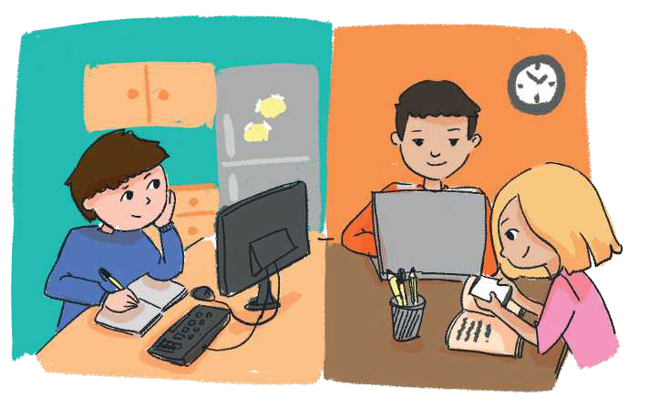

TEMATIKA 6: MEDIET
1.DITA PËRDOR KOMPJUTERIN

Dita kishte detyrë shtëpie në lëndën “Njeriu dhe natyra”, që të gjente të dhëna për planetët e Sistemit Diellor. Vëllai i saj, Arti, kishte për detyrë të shikonte një film vizatimor që u kishte dhënë mësuesja dhe ta komentonte më pas në fletore.
Dita dhe vëllai i saj vendosën që njëri të përdorte telefonin e mamit, ndërsa tjetri kompjuterin.
Mami e ndihmoi Ditën të gjente të dhënat për planetët me anë të telefonit, ndërsa Arti bëri një përmbledhje të filmit në fletore, pasi e pa filmin vizatimor në kompjuter.